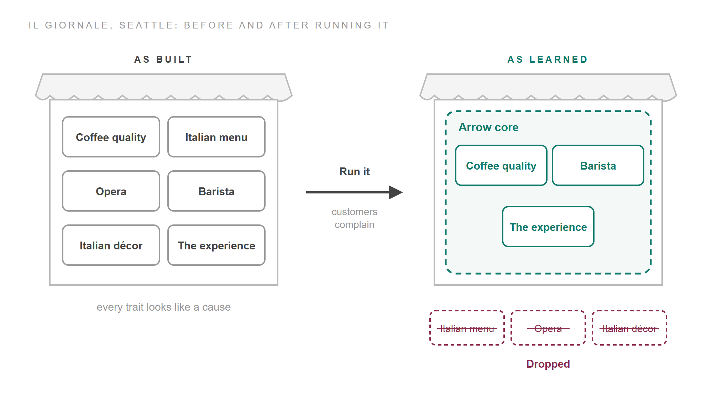

Copying what nobody can write down
A chain store looks like the easiest business to explain. Someone gets one shop right, writes down what they did, and opens the same shop again and again, so the chain's profit is one shop's profit times the number of shops. Sidney Winter and Gabriel Szulanski, who studied firms that grow this way, call this the usual picture of replication and argue that it misses most of what such firms actually do.
This post asks three questions the usual picture can't answer. What does a firm copy when it copies a working shop? If the shop can be copied, why can't a rival copy it too? And why does no copy stay the same as the original? It draws on three papers: Winter and Szulanski's account of replication as a strategy, Jan Rivkin's model of when a firm can copy itself but rivals can't copy it, and Martin Friesl and Joanne Larty's review of how copied routines change once people perform them. One bank, Banc One, runs through the whole post. It leaves out franchise contracts, finance and brand, and starts from the usual picture, a formula written down and copied, adding a part each time that picture fails.
Template⚓︎
A replicator copies a working example, because the thing that makes its business work can't be written down. Winter and Szulanski find that what a chain copies is rarely an insight that would fit on a page. It is "a complex set of interdependent routines that is discovered, adjusted, and fine-tuned by 'doing'": how the counter is staffed, how stock is ordered, how people are trained, which sites are chosen. Much of it is tacit, held in the hands of the people who do the work, and even the people running the shop can't say exactly which parts make it succeed.
The working example has a name. Following Richard Nelson and Sidney Winter's earlier work, Winter and Szulanski call it the template: the outlet someone would point to if asked what a new one should look like. For McDonald's, the first template was the McDonald brothers' hamburger stand. Nelson and Winter put its advantage plainly. A template "makes possible a relatively precise copying of a functioning system that is far too large and complex to be comprehended by a single person." Nobody has to understand the whole system, because the whole system is there to be looked at.
The bank this post follows shows what that looks like in practice. Banc One, an American regional bank, grew from the 1970s into the 1990s by buying other banks and converting each one to its own computer systems, products and procedures. For every new bank it picked a "sister bank" that had recently converted to similar systems and served a similar market. Staff from the new bank visited the sister to see how it ran, and the sister could lend specialists to help with the conversion. Banc One also wrote manuals, with step-by-step procedures for tellers and branch staff. It still sent people to look at a working bank.
The manuals weren't enough for a reason philosophers had already found. Ludwig Wittgenstein argued that a written rule can't fix how it is to be applied: "no course of action could be determined by a rule, because any course of action can be made out to accord with the rule" (Philosophical Investigations §201). People learn what a rule means by watching it followed. Winter and Szulanski make the same point about business knowledge. The written part "must still be translated into action", and the principles for translating it are hard to state but "can be learned and thus recreated by consulting a working example." The template supplies the applications that the manual leaves open.
Copying an example solves one problem and creates another. The example contains everything the shop happens to be, and some of that has nothing to do with why it works.
Arrow core⚓︎
The part of the template that matters is what Winter and Szulanski call the Arrow core: the knowledge of which traits of the business can be copied and are worth copying, how those traits are produced, and in what kinds of place they pay. It is the complete answer to what, how and where to replicate, and it contains nothing irrelevant or harmful. The name honours the economist Kenneth Arrow, whose work on information explains why the core is so valuable. Information isn't used up by being used. Knowing how to run a good bank in one town takes nothing away from knowing how to run one in the next.
Strictly, the core is knowledge about traits, but it is convenient to call the traits it picks out the core as well. The template holds those traits along with three other kinds. Some are irrelevant. Some are harmful, hidden by the template's overall success. Some matter but can't be copied, such as the instincts and local reputation of one particular manager. A firm can stretch such a person across more sites, but that spreads them thin, while the core can serve any number of sites at once. Nothing on the shop floor labels which trait is which. Even insiders face what economists call causal ambiguity: they can't say with confidence which of the things they do produce the results they get.
Starbucks' early history shows the sorting taking place. Before Starbucks, Howard Schultz opened a coffee bar in Seattle called Il Giornale, modelled on the espresso bars he had seen in Italy, with Italian words on the menu, Italian décor and Italian opera on the sound system. In the figure below, the left shop is Il Giornale as built, with every trait drawn alike. The right shop is the same business after it had been running for a while.

Customers did the sorting. "People started complaining about the incessant opera," Schultz recalled, and he dropped much of the Italian trimming. What carried into the Starbucks chain was the quality of the coffee, the overall experience and the barista. The dashed line around those three is the Arrow core as the firm came to understand it. It is drawn dashed because it is a belief, which further shops would test. Winter and Szulanski call the core "the hidden truth about replication potential": the firm never sees it directly, and learns it by building outlets and watching which differences matter, much as a scientist tests a theory against new facts.
Banc One learned this way too, and kept what it learned in a dedicated unit. Its systems subsidiary carried out more than 135 conversions of over 80 banks between 1970 and 1993. One of them, a $650 million bank with 32 branches in Lafayette, Indiana, converted in 1986, was remembered inside Banc One as the worst ever. Out of failures like it came a written conversion process, and in Winter and Szulanski's summary, "every problem became first a checkpoint and then a task." That checklist wrote down part of the Arrow core, one lesson at a time. The rest stayed in employees' skills, which Banc One still had to pass on by training, and the unit that kept both was learning how to replicate as well as what to replicate.
Copy exactly⚓︎
Once the firm settles on its idea of the core, it does best by copying the template precisely, traits that may not matter included. The settling is forced on it by time, which a replicator has least of. Every month spent refining the model is a month in which rivals can take the best sites, so at some point the firm stops exploring and starts copying at scale. Winter and Szulanski liken this to freezing a product's design. Bradach's study of five restaurant chains found the same pattern: "most of the costs incurred by the chain to create and refine a business format occur early in the life of the chain. Later in a chain's life cycle, the chain operator clones units."
After the design is frozen, the firm faces what Winter and Szulanski call the replication dilemma: copy the template precisely, or let each new outlet adapt it to local conditions. Adapting sounds wiser. Precision means copying traits that may not matter, and no new town is quite like the old one.
They argue for precision anyway, at least at first. Their hypothesis is that replication pays best when the firm starts by copying the template exactly and adapts only once a close copy is up and running. Intel's "Copy Exactly" policy for its chip plants is the extreme case. No change to a plant's specification happens without a central committee's approval, and an approved change goes into every plant built to that specification; staff joked that "even the height of the process technicians must be identical at all fabs." Franchisees arrive at the same view from below. One told Bradach: "Why venture into the unknown? Once you start screwing around with the format, things get really complicated." Later evidence points the same way. Szulanski and Robert Jensen followed one franchisor's expansion into 23 countries and found that local licensees who copied its blueprint more exactly grew their networks faster, with the benefit of an exact first year lasting several years.
That leaves a doubt. If the firm has a fair idea of which traits matter, why not copy those and leave the rest? Winter and Szulanski describe a version of this they saw in chains: a "mix and match" rule that assembles a new store from the best parts of several, one part from the original St. Louis design and another from an innovation tried in San Francisco. Its weakness, they say, is that it assumes the parts don't affect one another. To see why that assumption fails, we need a picture of how parts affect one another.
Interactions⚓︎
Rivkin's model supplies that picture, and it shows that when choices interact, the value of each depends on the others. The model treats a business strategy as a set of choices: make an input or buy it, install flexible machines or specialised ones, organise by function or by product. In his simulations there are twelve such choices, each with two options. The setting that matters is how many other choices each choice's value depends on, which Rivkin calls K. His examples are ordinary. Machines that let a factory make a wide product range are worth more if the salesforce is trained to sell that range, and a no-questions-asked returns policy costs less if the logistics are already set up to take goods back. When K is zero, each choice adds its value alone. When K is eleven, every choice changes the value of every other.
Rivkin pictures every possible combination of choices as a point on a landscape, with height standing for profit. A firm looking for a better strategy is a climber on that landscape, and the simplest way to climb is to change one choice at a time and keep any change that helps. In the figure below, each panel is a landscape for a different degree of interaction. The real landscapes have twelve dimensions, so these slices show their shape, not their scale. The flag marks the best combination anyone knows of, where the template stands. Each climber starts at the open circle and stops at the filled one. Watch where it stops.
![Three landscapes drawn as grey silhouettes, each with a teal flag on its highest point labelled best known. Few interactions: one smooth hill, and a climber's dotted path runs from the foot to the flag; tweaks reach the top. Some interactions: a range of four peaks, and the climber stops on a low peak to the left of the flagged one; stops on a lower peak, peaks cluster together. Many interactions: a field of jagged spikes, and the climber stops on the first small spike; stops almost at once, many peaks, far apart.](../../../../blog_assets/replication_landscapes.png)
With few interactions the landscape is one smooth hill, and changing one choice at a time leads to the top from anywhere. As interactions grow, the hill breaks into a range of peaks. A climber on a lesser peak finds that every single change makes things worse, so it stays there, though a better peak exists nearby. With many interactions the landscape becomes a field of spikes. When every choice affects every other, changing one choice changes the value of all twelve, so a combination one step from a high peak has a profit essentially unrelated to that peak's. By Rivkin's formula, a twelve-choice landscape at maximum interaction has about 315 local peaks on average, the typical peak is lower, and the high ones lie far apart. Rivkin gives the organisational version of being stuck: a manager in charge of one choice has no reason to change it, because any change they can make alone makes results worse.
The picture settles the doubt about copying exactly. When choices interact, a trait that looks irrelevant may be holding up the value of a trait that matters. Leaving it out, or swapping in a part from another store, moves the new outlet off the template's peak, and on a range of peaks the nearest slope may lead somewhere lower. Copying every trait keeps the outlet on the peak the template has already found, whatever the firm believes about which traits matter. That is why precision pays most where the work is most tangled, as in Intel's plants, and why the mix-and-match store bets on interactions nobody has tested.
Imitators⚓︎
The same landscape decides when a rival can follow. Nelson and Winter treated replication and imitation as two versions of one task, reproducing a success, and Rivkin quotes Winter's warning that "[f]eatures that restrain involuntary transfer tend to inhibit voluntary transfer." Whatever stops a rival copying you tends to stop you copying yourself. Anything you do to make copying easier, such as writing a better manual, helps the rival as well.
Two of Rivkin's cases show this link holding at either end. White Castle, whose founders are widely credited with inventing the fast-food business, standardised everything: white steel buildings with turrets, stools facing a grill, a short menu, an emphasis on hygiene. It spread fast and was copied faster. The founders of White Tower visited White Castles in Minneapolis, photographed and measured them, copied the products and hired away an operator. By the early 1930s, White Tower ran nearly as many outlets as White Castle. Marks & Spencer was the opposite case. For generations it was Britain's leading retailer of clothing and food, built on decades of partnership with suppliers who made goods almost only for it. No British rival matched it, and nor could Marks & Spencer itself in Canada, where new suppliers failed its quality standards and it ended up importing from its British ones. In one case writer's words, "the same difficulties that inhibit[ed] competitors from copying M & S's position in the United Kingdom also limit[ed] M & S's ability to replicate its U.K. position overseas."
What the replicator has and the rival lacks is the template. Even with it, the replicator can't set every choice right at the first attempt, because it doesn't know exactly what made the original work; Rivkin's replicator copies imperfectly too, only less so. He gives the template three uses: the replicator starts its copy closer to the original, it is more accurate when it tries to change many choices at once to match the original, and it knows which of its choices already match. Each use produces the same pattern in his runs, so the next figure shows only the first. The landscapes stay the same and one thing changes. There are now two climbers. The replicator starts near the flag, because it has the template, and the imitator starts far away, because it sees only the outside.
![The same three landscapes with two climbers in each, a teal replicator and a violet imitator. Few interactions: both dotted paths reach the flag; both reach the top, the template adds little. Some interactions: the replicator, starting on the flagged peak's slope, reaches the flag, while the imitator stops on a low peak to the left; only the replicator does, the template is worth most. Many interactions: the replicator stops on a small spike next to the flag and the imitator on a small spike at the far left, at similar heights; neither does, near is not high.](../../../../blog_assets/replication_landscapes_rivals.png)
On the smooth hill the template adds little, because both climbers reach the top and the imitator just takes longer. On the field of spikes it adds little too. The replicator ends up nearer the best peak than the imitator does, but the spikes between high peaks are low, so being near the best one is worth almost nothing. Only in between, where peaks cluster in ranges, does the template's head start carry the replicator up the right slope while the imitator is caught on a lesser peak.
Rivkin's numbers have the same shape. In one set of his runs, the replicator starts with eight of the twelve choices matching the original and the imitator with two, and both then improve one choice at a time. The table gives the share of the best possible profit each reaches, averaged over 200 landscapes:
| Interactions (K) | Replicator | Imitator | Gap (points) |
|---|---|---|---|
| 0 | 100.0% | 100.0% | 0.0 |
| 1 | 99.3% | 95.2% | 4.1 |
| 2 | 97.8% | 91.8% | 6.1 |
| 3 | 96.3% | 90.6% | 5.7 |
| 5 | 92.4% | 89.2% | 3.2 |
| 11 | 81.1% | 81.0% | 0.2 |
The gap is Rivkin's own figure, computed before rounding, so it can differ by 0.1 from subtracting the two columns.
The gap is widest at K = 2 in this setting and has almost vanished by K = 11. At that level the replicator still ends up much nearer the original, 4.4 choices away against the imitator's 9.1, and is no better off for it. It even ends slightly further away than it started, because climbing from its starting point led to whichever local peak lay nearest. Where the gap peaks depends on the size of the head start: in Rivkin's runs, the more choices the replicator starts with right, the higher the K at which its advantage is largest. He puts it as a rule of thumb: "the greater is a firm's informational superiority, the more complex it would like its strategy to be."
This is where a common belief fails. It is tempting to think that the more intricate a business is, the safer it is from copycats. Rivkin's results say intricacy guards against rivals and against your own expansion alike, which is Marks & Spencer's story. White Castle's trouble, on his reading, ran the other way: its turrets had little to do with its menu, and neither had much to do with its hygiene, so a copycat could get each part right separately.
Winter and Szulanski add a further reason a rival falls behind, and Banc One's checklist is an instance of it. A rival has to copy more than a shop; it has to copy the ability to open shops. "It is one thing to contemplate imitating a Starbucks coffee bar," they write, "yet quite another to consider imitating a set of organizational capabilities that makes it possible to locate, design, build, furnish, and train personnel for new coffee bars at the Starbucks rate of about one store a day." That capability lives in the replicator's centre, where an outsider can't observe it. Rivkin counts Banc One among the firms that managed to replicate without being imitated, at least for some time.
Performance⚓︎
Rivkin's model has a limit that he states himself: it treats the original success as a fixed target and each copy as a one-off effort. A choice in the model is a switch set to 0 or 1, and once set, it stays set. Friesl and Larty's review explains why real copies don't behave like switches: a routine exists only when people perform it, and performances vary.
They draw on Martha Feldman and Brian Pentland's account of routines, which gives every routine two aspects. The ostensive aspect is the routine as people understand it, the shared and partly unspoken idea that lets staff recognise a set of activities as, say, part of the hiring routine, and judge whether they were done properly. The performative aspect is the routine as actually carried out, by particular people on a particular day. Each shapes the other. People's understanding guides what they do, and what they do, repeated, maintains or changes their understanding. As Friesl and Larty put it, drawing on Wanda Orlikowski, knowledge "is not transferred but enacted in practice."
This changes what a transfer can carry. A manual, a training course or a visit to a sister bank can shape the new staff's understanding of a routine. The performance itself has to be produced on site, by people with their own experience, values and interests, who have room to vary it. Wittgenstein's point applies here too: since a rule can't settle its own applications, people who share an understanding can still carry it out differently.
Friesl and Larty call the result drift, and they find it in two directions. In performative drift, staff in two outlets share an understanding of a routine but carry it out differently. In ostensive drift, they carry it out the same way but understand it differently, which someone watching the work would miss, because it shows only in how people explain what they do. Pentland found both in Citibank's branches. In one case, performances varied widely while people's understanding was much the same; in another, understanding varied while the performances were alike. Drift also grows with time. As a routine turns into habit, the knowledge of how to do it slips out of conscious attention, and the performance can wander from the manual without anyone deciding to change it.
A copy, then, has to be kept as well as made. Winter and Szulanski reach the same view from the replicator's side. Chains with high staff turnover lose skills constantly, and a study of pizza stores found that a store's effectiveness came overwhelmingly from its experience in recent weeks; tossing dough by hand is a tacit skill, passed on by apprenticeship. They describe knowledge transfer as a process "by which an organization recreates a complex, causally ambiguous set of routines in new settings and keeps it functioning." In the terms of Rivkin's landscape, an outlet keeps getting nudged off the peak it was placed on, and someone has to keep putting it back.
Feedback⚓︎
Copies send lessons back as well as receiving them, and what gets written into the template is decided by people with a stake in it. Friesl and Larty call these reverse knowledge flows: lessons from the copies that change the template for the next round. Winter and Szulanski note that innovations in replicating firms often start in a local outlet and spread from there, rather than being planned at the centre. Szulanski and Jensen describe the order this suggests, with replication as "a method for lowering the risk and effort of innovation by allowing one to master the existing form first." An outlet that has mastered the template can break its rules knowingly, and a good change can then travel back to the centre.
Banc One built a place for that return trip. Alongside its sister banks it ran a "model bank", a working front and back office where every new corporate standard and system was installed first, so that pilots could run without disrupting a real bank. The model bank was a template kept deliberately one step ahead, where changes to the Arrow core were tried before they went out.
The lessons that travel back are chosen in a contest, though. Friesl and Larty argue that replication is political at both ends. Choosing which unit's routines become the template "adds prestige and legitimacy to the respective unit and its management," so units have reason to lobby for their own way of working. Banc One's history has an example. When it converted a bank in Indianapolis, the local bank "wanted to keep their own systems and there was this tug of war about which systems they were going to use." The policy that grew out of it, which Banc One called Common Systems, was blunt: "We were going to have one common product and everybody is going to it." That policy was a statement about the Arrow core, and it came out of a fight over systems as much as out of analysis. Winter and Szulanski call Banc One's whole replication process "to some extent an emergent phenomenon." Nothing in their account says the outcome was worse than the alternative. The risk Friesl and Larty name is that it can be: reverse drift, drift in the flow back to the centre, where an inferior template or a poor rule is adopted for the next round because its backers won the argument.
The last figure puts the parts together. The centre holds the Arrow core as a dashed page, a hypothesis learned from the template beneath it, whose teal cards are the traits the core picks out, as in the first figure. The centre sends copies out to the outlets. In each outlet the copy exists twice, as a routine understood and as a routine performed, and in the bottom outlet the performance has drifted. Only performative drift can be drawn; ostensive drift, a change in understanding, doesn't show from outside. Lessons flow back to the centre, contested on the way. The imitator stands outside, watching the outlets.
![A three-zone diagram. In the teal replicator zone, a building labelled centre holds a dashed page labelled Arrow core; below it, a shop labelled template, a working example, with an arrow labelled learn pointing up to the centre. Teal arrows labelled copy run from the centre to three shops in the amber outlets zone. Each shop holds a page and three people, labelled understood and performed in the first shop; in the third shop two of the people are tilted, labelled drift. Dashed amber arrows labelled lessons, contested, run from the second and third shops back to the centre. In the violet rival zone, an eye labelled imitator, sees outlets, not the core, looks at the middle shop along a dotted line.](../../../../blog_assets/replication_assembled.png)
Nowhere in the figure is the Arrow core written down for certain. It exists as the centre's current hypothesis, tested by every new outlet and revised by lessons that someone had to win an argument to send back, while drift wears away the copies made from it. The imitator, looking at the outlets, sees the performances and some of the template's surface, which is enough to copy a White Castle and not enough to copy a Banc One.
Sources⚓︎
- Winter, S. G. & Szulanski, G. (2001). Replication as strategy. Organization Science, 12(6), 730–743. Banc One, Starbucks, Intel, Bradach's chains, the Arrow core.
- Rivkin, J. W. (2001). Reproducing knowledge: Replication without imitation at moderate complexity. Organization Science, 12(3), 274–293. The landscape model, Table 3 (Panel A) and Table 4; White Castle and Marks & Spencer.
- Friesl, M. & Larty, J. (2013). Replication of routines in organizations: Existing literature and new perspectives. International Journal of Management Reviews, 15(1), 106–122. Ostensive and performative aspects, drift, reverse flows, politics; Nelson and Winter's template quotation; Pentland's Citibank study.
- Szulanski, G. & Jensen, R. J. (2008). Growing through copying: The negative consequences of innovation on franchise network growth. Research Policy, 37, 1732–1741 (abstract).
- Wittgenstein, L. Philosophical Investigations, §201, revised translation (2001), as quoted in an essay on the paradox in §201.